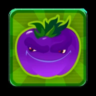
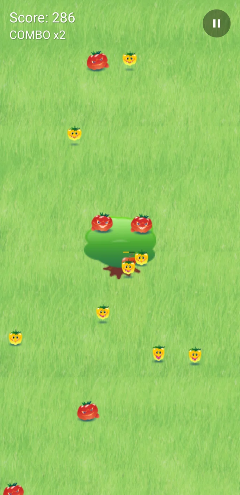
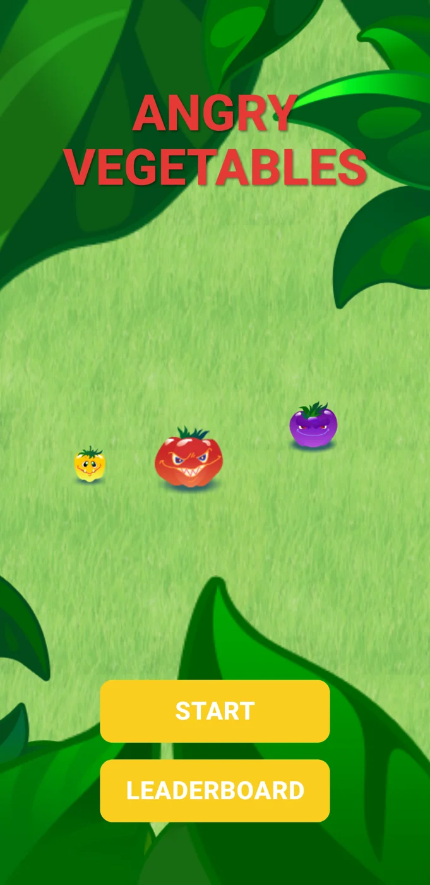
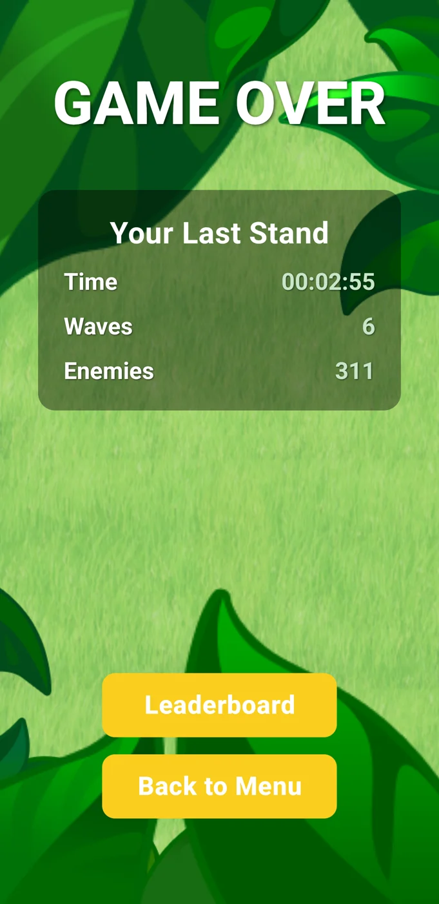

Android
Angry Vegetables
Small veggies.
Big trouble.
Tap, squash and defend your apple tree from an increasingly angry garden.

01
Tap to defend
Squash approaching vegetables before they reach your apples.
02
Keep the combo going
Chain your taps for bonus points as the waves get tougher.
03
One more round?
Try to beat your own score or compete on the global leaderboard.
TAKE A LOOK AROUND
A little preview.


Good to know.
How do I play?
Tap the vegetables before they reach your apple tree. Chain your smashes to build combos.
Does it get harder?
Yes. Enemy waves become tougher as you survive longer.
Where can I read the privacy policy?
A REAL PERSON, ON THE OTHER SIDE
Need a hand?
Questions, ideas or something not working? Write to me.
Include the app name, your device and what happened.